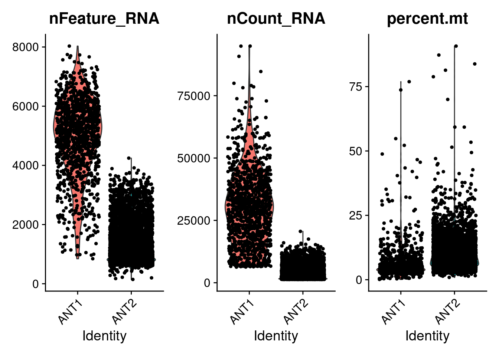
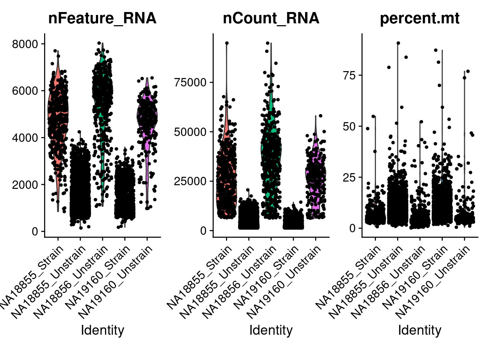
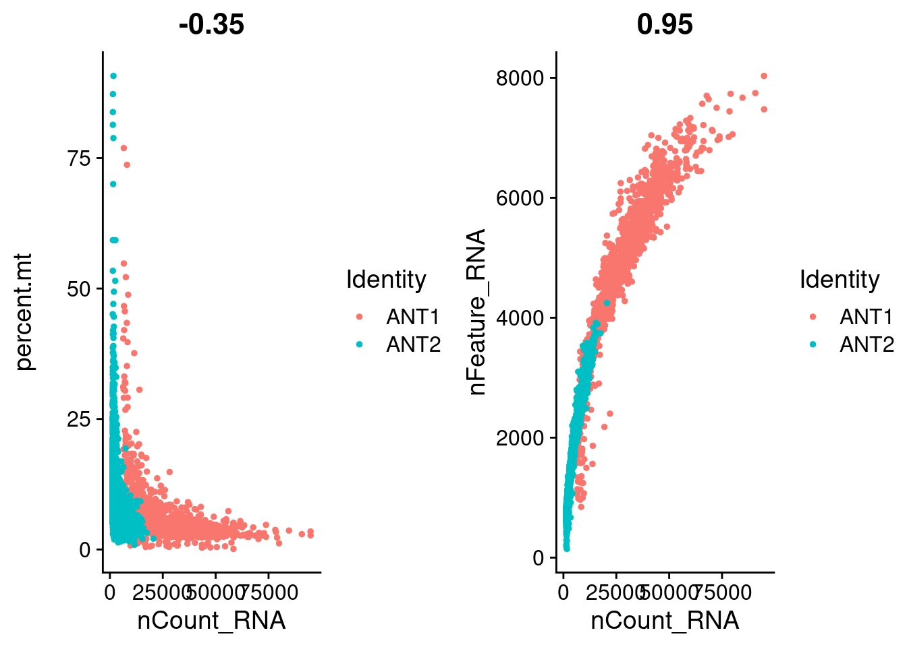
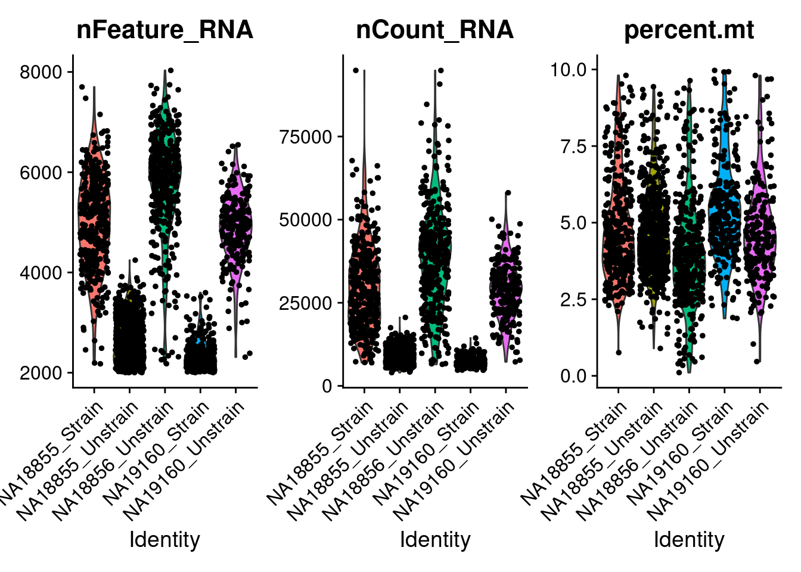
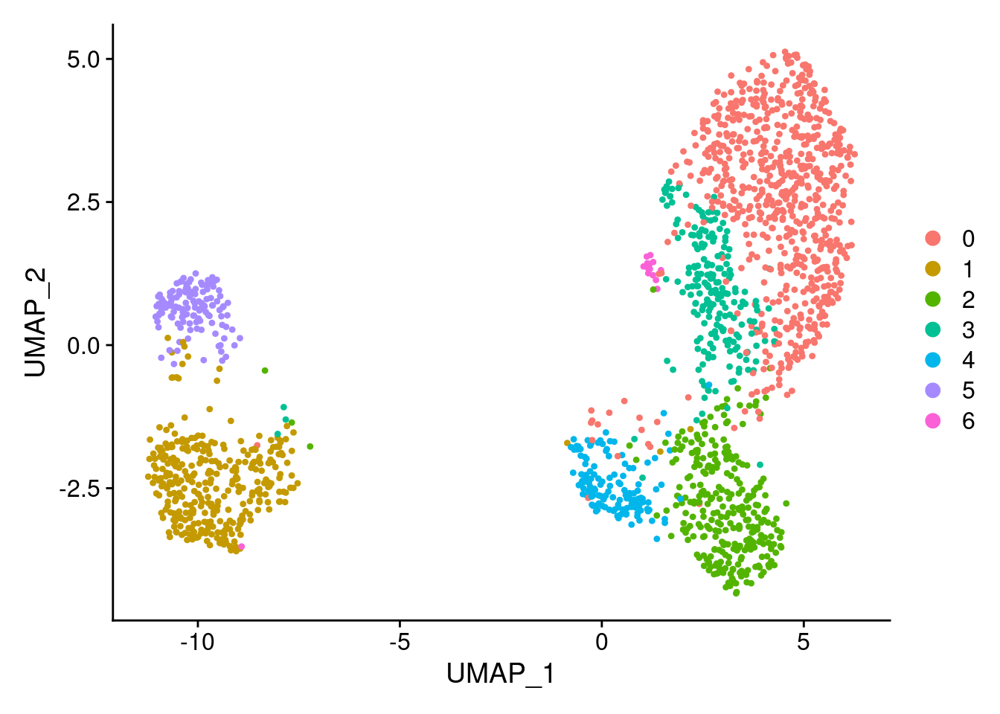
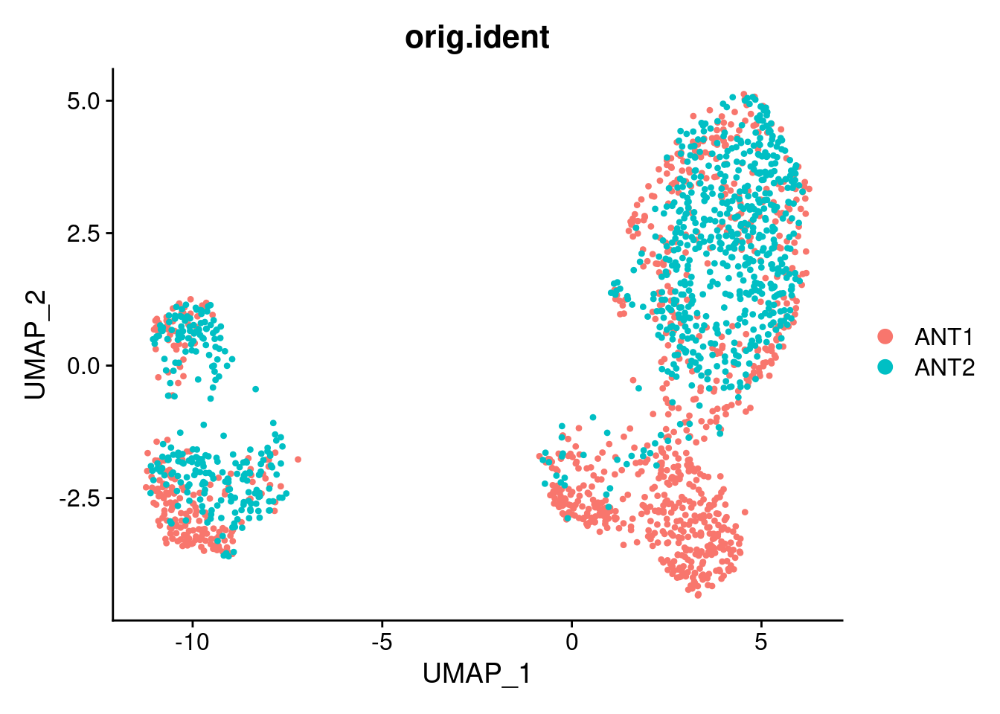
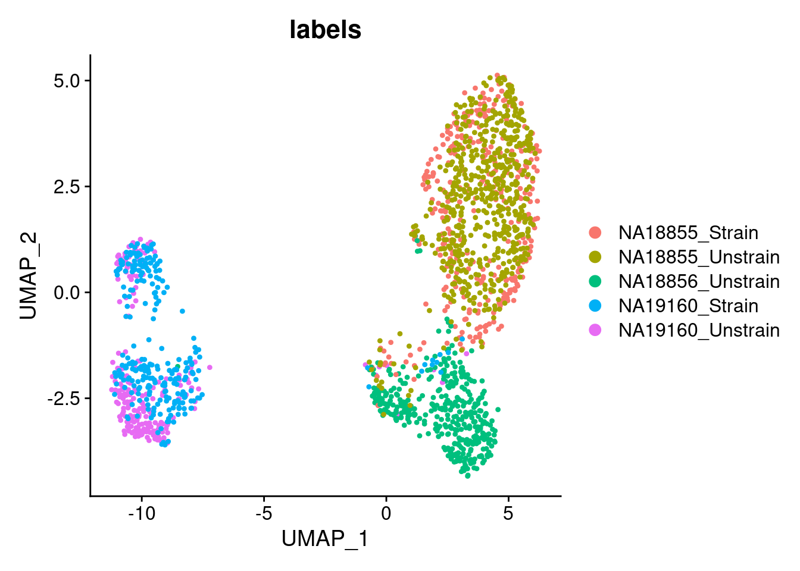

Last updated: 2021-01-21
Checks: 7 0
Knit directory: invitroOA_pilot_repository/
This reproducible R Markdown analysis was created with workflowr (version 1.6.2). The Checks tab describes the reproducibility checks that were applied when the results were created. The Past versions tab lists the development history.
Great! Since the R Markdown file has been committed to the Git repository, you know the exact version of the code that produced these results.
Great job! The global environment was empty. Objects defined in the global environment can affect the analysis in your R Markdown file in unknown ways. For reproduciblity it’s best to always run the code in an empty environment.
The command set.seed(20210119) was run prior to running the code in the R Markdown file. Setting a seed ensures that any results that rely on randomness, e.g. subsampling or permutations, are reproducible.
Great job! Recording the operating system, R version, and package versions is critical for reproducibility.
Nice! There were no cached chunks for this analysis, so you can be confident that you successfully produced the results during this run.
Great job! Using relative paths to the files within your workflowr project makes it easier to run your code on other machines.
Great! You are using Git for version control. Tracking code development and connecting the code version to the results is critical for reproducibility.
The results in this page were generated with repository version 58e93fd. See the Past versions tab to see a history of the changes made to the R Markdown and HTML files.
Note that you need to be careful to ensure that all relevant files for the analysis have been committed to Git prior to generating the results (you can use wflow_publish or wflow_git_commit). workflowr only checks the R Markdown file, but you know if there are other scripts or data files that it depends on. Below is the status of the Git repository when the results were generated:
Ignored files:
Ignored: .Rhistory
Ignored: .Rproj.user/
Ignored: code/bulkRNA_preprocessing/.snakemake/conda-archive/
Ignored: code/bulkRNA_preprocessing/.snakemake/conda/
Ignored: code/bulkRNA_preprocessing/.snakemake/locks/
Ignored: code/bulkRNA_preprocessing/.snakemake/shadow/
Ignored: code/bulkRNA_preprocessing/.snakemake/singularity/
Ignored: code/bulkRNA_preprocessing/.snakemake/tmp.3ekfs3n5/
Ignored: code/bulkRNA_preprocessing/fastq/
Ignored: code/bulkRNA_preprocessing/out/
Ignored: code/single_cell_preprocessing/.snakemake/conda-archive/
Ignored: code/single_cell_preprocessing/.snakemake/conda/
Ignored: code/single_cell_preprocessing/.snakemake/locks/
Ignored: code/single_cell_preprocessing/.snakemake/shadow/
Ignored: code/single_cell_preprocessing/.snakemake/singularity/
Ignored: code/single_cell_preprocessing/YG-AH-2S-ANT-1_S1_L008/
Ignored: code/single_cell_preprocessing/YG-AH-2S-ANT-2_S2_L008/
Ignored: code/single_cell_preprocessing/demuxlet/.DS_Store
Ignored: code/single_cell_preprocessing/fastq/
Ignored: data/external_scRNA/Chou_et_al2020/
Ignored: data/external_scRNA/Jietal2018/
Ignored: data/external_scRNA/Wuetal2021/
Ignored: data/external_scRNA/merged_external_scRNA.rds
Ignored: data/poweranalysis/alasoo_et_al/
Ignored: output/GO_terms_enriched.csv
Ignored: output/topicModel_k=7.rds
Ignored: output/voom_results.rds
Unstaged changes:
Modified: .gitignore
Note that any generated files, e.g. HTML, png, CSS, etc., are not included in this status report because it is ok for generated content to have uncommitted changes.
These are the previous versions of the repository in which changes were made to the R Markdown (analysis/preProcess_scRNA.Rmd) and HTML (docs/preProcess_scRNA.html) files. If you’ve configured a remote Git repository (see ?wflow_git_remote), click on the hyperlinks in the table below to view the files as they were in that past version.
| File | Version | Author | Date | Message |
|---|---|---|---|---|
| Rmd | 58e93fd | Anthony Hung | 2021-01-21 | forgo the grid |
| html | 58e93fd | Anthony Hung | 2021-01-21 | forgo the grid |
| Rmd | 89d8ddd | Anthony Hung | 2021-01-21 | add three rows |
| html | 89d8ddd | Anthony Hung | 2021-01-21 | add three rows |
| Rmd | 32e5716 | Anthony Hung | 2021-01-21 | add gridextra |
| Rmd | 78cfbcd | Anthony Hung | 2021-01-21 | finish paring down files |
| Rmd | e0e89e1 | Anthony Hung | 2021-01-21 | download annotations and finish preprocessing of bulkRNA |
| Rmd | 99c70b8 | Anthony Hung | 2021-01-20 | update external data |
| html | 99c70b8 | Anthony Hung | 2021-01-20 | update external data |
| Rmd | 446bf4b | Anthony Hung | 2021-01-20 | add to gitignore |
| Rmd | 1ec66ea | Anthony Hung | 2021-01-20 | add information desribing preprocessing scran |
| Rmd | 28f57fa | Anthony Hung | 2021-01-19 | Add files for analysis |
This page will walk through the steps to go from the raw 10x sequencing fastq files to a count matrix and demuxlet assignment of droplets to individuals. This involves running a Snakemake pipeline located in the code directory and some code in R. The end product are seurat objects containing the raw count matrices and assignment to one of the three individuals and two treatment groups (strain or unstrain) for each of the two 10x GEM wells used in the sequencing experiment.
Move the fastq files from all samples (these are output files from 10x runs, containing both forward and reverse sequences) into the folder code/single_cell_preprocessing/fastq/. Undetermined data files are not required.
Modify the code/single_cell_preprocessing/Pipeline/cluster_solo.json file to correspond to the computing cluster you are working with.
Unzip the whitelist file in the code/single_cell_preprocessing/ directory.
Place the human.YRI.cellranger.exons.vcf file into the code/single_cell_preprocessing/ directory.
Install the conda working by running “conda env create –file environment.yaml”
Run “source activate dropseq2” to activate the conda environment.
Run the file “submit.sh”.
After running the pipeline, two directories will be created corresponding to the two 10x GEM well involved in the sequencing experiment (“YG-AH-2S-ANT-1_S1_L008” and “YG-AH-2S-ANT-2_S2_L008”). These directories contain the demuxlet and STAR SOLO outputs for each 10x GEM well
Details about the individualXtreatment status of the samples that were pooled for each of the two GEM wells: ANT1: (NA19160 unstrained; NA18856 unstrained; NA18855 strained) ANT2: (NA19160 strained; NA18855 unstrained)
library(data.table)
library(Matrix)
library(Seurat)
library(readr)
library(stringr)
library(plyr)
library(dplyr)
Attaching package: 'dplyr'The following objects are masked from 'package:plyr':
arrange, count, desc, failwith, id, mutate, rename, summarise,
summarizeThe following objects are masked from 'package:data.table':
between, first, lastThe following objects are masked from 'package:stats':
filter, lagThe following objects are masked from 'package:base':
intersect, setdiff, setequal, union## link to directories containing data files (count matrices)
proj_dir <- "code/single_cell_preprocessing/"
ANT1_dir <- paste0(proj_dir, "YG-AH-2S-ANT-1_S1_L008/")
ANT2_dir <- paste0(proj_dir, "YG-AH-2S-ANT-2_S2_L008/")
#read in data
##Gene Output from STARSOLO
#ANT1
demuxlet1 <- fread(paste0(ANT1_dir, "demuxlet.best", sep = ""))
count_data1 <- readMM(paste0(ANT1_dir, "Gene/filtered/matrix.mtx"))
genes1 <- read_tsv(paste0(ANT1_dir, "Gene/filtered/genes.tsv"), col_names = F)Parsed with column specification:
cols(
X1 = col_character(),
X2 = col_character()
)barcodes1 <- as.data.frame(read_tsv(paste0(ANT1_dir, "Gene/filtered/barcodes.tsv"), col_names = F))Parsed with column specification:
cols(
X1 = col_character()
)#ANT2
demuxlet2 <- fread(paste0(ANT2_dir, "demuxlet.best", sep = ""))
count_data2 <- readMM(paste0(ANT2_dir, "Gene/filtered/matrix.mtx"))
genes2 <- read_tsv(paste0(ANT2_dir, "Gene/filtered/genes.tsv"), col_names = F)Parsed with column specification:
cols(
X1 = col_character(),
X2 = col_character()
)barcodes2 <- as.data.frame(read_tsv(paste0(ANT2_dir, "Gene/filtered/barcodes.tsv"), col_names = F))Parsed with column specification:
cols(
X1 = col_character()
)#this function returns a dataframe with two columns, one corresponding to the barcodes and one corresponding to the label given by demuxlet
return_singlet_label <- function(barcodes, demuxlet.out){
labels <- demuxlet.out$BEST[match(unlist(barcodes), demuxlet.out$BARCODE)]
return(cbind(barcodes, labels))
}
barcodes1_labeled <- return_singlet_label(barcodes1, demuxlet1)
barcodes2_labeled <- return_singlet_label(barcodes2, demuxlet2)
#table of singlets/multiplets in the filtered data based on demuxlet
table(barcodes1_labeled$labels)
DBL-NA18855-NA18856-0.500 DBL-NA19160-NA18855-0.500
13 6
DBL-NA19160-NA18856-0.500 SNG-NA18855
7 411
SNG-NA18856 SNG-NA19160
452 260 table(barcodes2_labeled$labels)
DBL-NA18855-NA18856-0.500 DBL-NA18855-NA19160-0.500
20 2719
DBL-NA18856-NA18855-0.500 DBL-NA19160-NA18855-0.500
4 5650
DBL-NA19160-NA18856-0.500 SNG-NA18855
22 4990
SNG-NA19160
1506 ## filter for droplets in the count data that are singlets (remove multiplets)
#ANT1
demuxlet_single1 <- demuxlet1 %>%
dplyr::filter(grepl("SNG-", BEST))
singlets_index1 <- unlist(lapply(barcodes1_labeled$X1,"%in%", table = demuxlet_single1$BARCODE), use.names = F) #get index of barcodes that are singlets
barcodes_singlets1 <- barcodes1_labeled[singlets_index1,] #use index to subset matrix + barcode names
count_data_singlets1 <- count_data1[,singlets_index1]
#ANT2
demuxlet_single2 <- demuxlet2 %>%
dplyr::filter(grepl("SNG-", BEST))
singlets_index2 <- unlist(lapply(barcodes2_labeled$X1,"%in%", table = demuxlet_single2$BARCODE), use.names = F) #get index of barcodes that are singlets
barcodes_singlets2 <- barcodes2_labeled[singlets_index2,] #use index to subset matrix + barcode names
count_data_singlets2 <- count_data2[,singlets_index2]#Change labels to reflect strain/unstrain based on prior knowledge of which strainXindividual combinations went into each pool
strainIndlabels1 <- revalue(barcodes_singlets1$labels,
c("SNG-NA18856"= "NA18856_Unstrain",
"SNG-NA18855" = "NA18855_Strain",
"SNG-NA19160" = "NA19160_Unstrain"))
strainIndlabels2 <- revalue(barcodes_singlets2$labels,
c("SNG-NA18855" = "NA18855_Unstrain",
"SNG-NA19160" = "NA19160_Strain"))
rownames(count_data_singlets1) <- genes1$X2
colnames(count_data_singlets1) <- barcodes_singlets1$X1
ANT1_seurat <- CreateSeuratObject(counts = count_data_singlets1, project = "ANT1") %>%
AddMetaData(strainIndlabels1, col.name = "labels")Warning: Non-unique features (rownames) present in the input matrix, making
uniquerownames(count_data_singlets2) <- genes2$X2
colnames(count_data_singlets2) <- barcodes_singlets2$X1
ANT2_seurat <- CreateSeuratObject(counts = count_data_singlets2, project = "ANT2") %>%
AddMetaData(strainIndlabels2, col.name = "labels")Warning: Non-unique features (rownames) present in the input matrix, making
uniqueThis merged dataset is used to fit the topic model in a later file. Based on the clustering results, which show that the cells from the same individual from different 10x GEM well overlap, there does not seem to be a large contribution of technical effects from 10x GEM well on gene expression.
ANT1.2 <- merge(x = ANT1_seurat,
y = ANT2_seurat,
add.cell.ids = c("ANT1", "ANT2"),
merge.data = F,
project = "OAStrain")
#compute the percentage of reads coming from mitochondrial genes for each droplet
ANT1.2[["percent.mt"]] <- PercentageFeatureSet(ANT1.2, pattern = "^MT-")
#visualize QC metrics as violin plot
VlnPlot(ANT1.2, features = c("nFeature_RNA", "nCount_RNA", "percent.mt"), ncol = 3)
| Version | Author | Date |
|---|---|---|
| 89d8ddd | Anthony Hung | 2021-01-21 |
VlnPlot(ANT1.2, features = c("nFeature_RNA", "nCount_RNA", "percent.mt"), ncol = 3, group.by = "labels")
| Version | Author | Date |
|---|---|---|
| 89d8ddd | Anthony Hung | 2021-01-21 |
# FeatureScatter is typically used to visualize feature-feature relationships, but can be used
# for anything calculated by the object, i.e. columns in object metadata, PC scores etc.
plot1 <- FeatureScatter(ANT1.2, feature1 = "nCount_RNA", feature2 = "percent.mt")
plot2 <- FeatureScatter(ANT1.2, feature1 = "nCount_RNA", feature2 = "nFeature_RNA")
CombinePlots(plots = list(plot1, plot2))Warning: CombinePlots is being deprecated. Plots should now be combined
using the patchwork system.
| Version | Author | Date |
|---|---|---|
| 89d8ddd | Anthony Hung | 2021-01-21 |
#Filter barcodes based on nFeatures and %MT
ANT1.2 <- subset(ANT1.2, subset = nFeature_RNA > 2000 & percent.mt < 10)
table(ANT1.2$labels)
NA18855_Strain NA18855_Unstrain NA18856_Unstrain NA19160_Strain
348 586 395 264
NA19160_Unstrain
222 #Look at QC metrics after filtering
VlnPlot(ANT1.2, features = c("nFeature_RNA", "nCount_RNA", "percent.mt"), ncol = 3, group.by = "labels")
| Version | Author | Date |
|---|---|---|
| 89d8ddd | Anthony Hung | 2021-01-21 |
dim(ANT1.2)[1] 33538 1815# Look at how the samples cluster after merging without any integration methods applied
#normalize
ANT1.2 <- NormalizeData(ANT1.2, normalization.method = "LogNormalize", scale.factor = 10000)
#find variable features and run a PCA
ANT1.2 <- FindVariableFeatures(ANT1.2, selection.method = "vst", nfeatures = 2000)
ANT1.2 <- ScaleData(ANT1.2, verbose = FALSE)
nPC <- 100
ANT1.2 <- RunPCA(ANT1.2, features = VariableFeatures(object = ANT1.2), npcs = nPC)PC_ 1
Positive: VIM, TIMP3, INHBA, TPM1, MAP3K7CL, SPINT2, PDLIM3, SOX4, C12orf75, TUBA1A
CCND2, CPE, RDH10, LZTS1, PMEPA1, LMO7, CDKN2B, TCAF1, MARCKSL1, UCHL1
GSTO1, XRCC4, IGFL2, FN1, FSCN1, RAI14, STMN1, CTGF, JPT1, MYH9
Negative: IFITM3, SAA1, SPON2, PDPN, TMEM141, PTGDS, DPP7, OTULINL, CDKN1C, TSPO
PRLR, DCN, LUM, FKBP5, PNMT, GGT5, MMP23B, NUPR1, TMEM88, PLIN2
SERPINF1, IQGAP2, ADAMTS2, SMOC2, APOD, GMPR, FAM213A, FMO5, TXNDC16, MME
PC_ 2
Positive: RPS4Y1, SLC3A2, EIF1AY, FTH1, SERPINE1, PTGR1, DDIT3, EIF1B, FAM129A, SQSTM1
DDX3Y, SPON2, MT1E, MGST1, CEBPB, BTG1, CLIC1, TRIB3, KCNG1, EZR
DUSP1, CYSTM1, PRDX6, TSPO, IFRD1, IMPA2, MAGEH1, NFIL3, YWHAQ, BLVRB
Negative: CHCHD2, MDK, MFAP4, PLAC9, OGN, COL15A1, B2M, SLC40A1, COL6A3, MEST
SPON1, FIBIN, HLA-A, MXRA5, ACTA2, RIMS2, IGFBP3, KCTD12, PITX1, PRSS35
CEMIP, GLIPR1, COL6A1, ADAM12, CCND2, SBF2-AS1, LURAP1L, FST, GNG11, CHN1
PC_ 3
Positive: OGFRL1, SMOC2, AQP1, TMEM88, GPC3, SELENOP, PROCR, ODAPH, CLTB, PRDX6
PLAC9, MEST, IGFBP7, PLA2G16, FLT1, SLIT3, ATRNL1, IGFBP2, TSPAN15, NEDD9
PDZRN4, TMEM176B, HAPLN4, RGS4, SRPX, NSG1, COL4A4, AC078850.1, TMEM176A, TPD52L1
Negative: MGST1, TGFBI, DDIT4, TRIB3, ZFAS1, FN1, SLC7A11, LGALS1, FTH1, SLFN5
AP002884.1, TXNRD1, LIMS1, GCLM, COL6A3, C1R, CRABP2, TSC22D3, PHGDH, HLA-B
ASNS, SLC12A8, DDIT3, NFIL3, NQO1, PMAIP1, TCEA1, GPR1, PCK2, AC040170.1
PC_ 4
Positive: IL6ST, TIMP1, COL6A2, COL6A1, HOPX, FBLN2, NR2F1, LTBP1, COL15A1, F3
SLC22A3, MME, MFAP4, MYL10, PDGFRA, SPON1, FLT1, TGM2, GAS7, TIMP3
CLMP, EGFL6, GDF6, EGFLAM, HGF, VTN, TSPAN9, FGF7, LTBP2, COL11A1
Negative: NRG1, MFAP5, ANOS1, ODAPH, PROCR, HTRA1, NKAIN4, AL356056.1, ANXA3, SPINT1
ODC1, PRSS23, SMOC2, ANGPTL7, PDZRN4, TXNRD2, TUBA1A, ENAH, CDH6, NTRK2
CLU, CDKN2A, DYNC1I1, SFRP1, PLAC9, PPME1, GADD45A, NCAM1, PLXDC1, GATM
PC_ 5
Positive: CDK1, PCLAF, CENPM, UBE2C, RRM2, TOP2A, NUSAP1, PTTG1, TYMS, PBK
BIRC5, CENPF, HMMR, SPC25, DEPDC1, CEP55, TUBA1B, FOXM1, SHCBP1, HMGB2
ORC6, NCAPG, GINS2, TROAP, TK1, GTSE1, MAD2L1, TPX2, ANLN, KRT18
Negative: FN1, FST, THBS2, WNT2, CXCL14, LOX, FILIP1L, NEAT1, RPRML, RAMP1
LUM, CKB, HTRA1, PLXDC1, TSPAN13, CCND2, FAP, COL6A2, IFI16, PLXDC2
PSPN, EGFL6, COMP, TDO2, RCN3, HSPB6, RPS4Y1, CD55, GPC4, IGFL3 #Run clustering and UMAP
num_PCs <- 50
ANT1.2 <- FindNeighbors(ANT1.2, dims = 1:num_PCs)Computing nearest neighbor graphComputing SNNANT1.2 <- FindClusters(ANT1.2, resolution = 0.5)Modularity Optimizer version 1.3.0 by Ludo Waltman and Nees Jan van Eck
Number of nodes: 1815
Number of edges: 85550
Running Louvain algorithm...
Maximum modularity in 10 random starts: 0.8146
Number of communities: 7
Elapsed time: 0 seconds#Run UMAP
ANT1.2 <- RunUMAP(ANT1.2, dims = 1:num_PCs)Warning: The default method for RunUMAP has changed from calling Python UMAP via reticulate to the R-native UWOT using the cosine metric
To use Python UMAP via reticulate, set umap.method to 'umap-learn' and metric to 'correlation'
This message will be shown once per session17:40:41 UMAP embedding parameters a = 0.9922 b = 1.11217:40:41 Read 1815 rows and found 50 numeric columns17:40:41 Using Annoy for neighbor search, n_neighbors = 3017:40:41 Building Annoy index with metric = cosine, n_trees = 500% 10 20 30 40 50 60 70 80 90 100%[----|----|----|----|----|----|----|----|----|----|**************************************************|
17:40:42 Writing NN index file to temp file /tmp/RtmpC9TKaD/file3919e8491c1d
17:40:42 Searching Annoy index using 1 thread, search_k = 3000
17:40:42 Annoy recall = 100%
17:40:42 Commencing smooth kNN distance calibration using 1 thread
17:40:43 Initializing from normalized Laplacian + noise
17:40:43 Commencing optimization for 500 epochs, with 73932 positive edges
17:40:49 Optimization finishedp1 <- DimPlot(ANT1.2, reduction = "umap")
p2 <- DimPlot(ANT1.2, reduction = "umap", group.by = "orig.ident")
p3 <- DimPlot(ANT1.2, reduction = "umap", group.by = "labels")
p1
p2
p3
saveRDS(ANT1.2, "data/ANT1_2.rds")
sessionInfo()R version 3.6.1 (2019-07-05)
Platform: x86_64-pc-linux-gnu (64-bit)
Running under: Scientific Linux 7.4 (Nitrogen)
Matrix products: default
BLAS/LAPACK: /software/openblas-0.2.19-el7-x86_64/lib/libopenblas_haswellp-r0.2.19.so
locale:
[1] LC_CTYPE=en_US.UTF-8 LC_NUMERIC=C
[3] LC_TIME=en_US.UTF-8 LC_COLLATE=en_US.UTF-8
[5] LC_MONETARY=en_US.UTF-8 LC_MESSAGES=en_US.UTF-8
[7] LC_PAPER=en_US.UTF-8 LC_NAME=C
[9] LC_ADDRESS=C LC_TELEPHONE=C
[11] LC_MEASUREMENT=en_US.UTF-8 LC_IDENTIFICATION=C
attached base packages:
[1] stats graphics grDevices utils datasets methods base
other attached packages:
[1] dplyr_1.0.2 plyr_1.8.6 stringr_1.4.0 readr_1.3.1
[5] Seurat_3.2.3 Matrix_1.2-18 data.table_1.13.0
loaded via a namespace (and not attached):
[1] Rtsne_0.15 colorspace_2.0-0 deldir_0.1-23
[4] ellipsis_0.3.1 ggridges_0.5.1 rprojroot_2.0.2
[7] fs_1.3.1 spatstat.data_1.7-0 farver_2.0.3
[10] leiden_0.3.1 listenv_0.8.0 npsurv_0.4-0
[13] ggrepel_0.9.0 RSpectra_0.15-0 codetools_0.2-16
[16] splines_3.6.1 lsei_1.2-0 knitr_1.23
[19] polyclip_1.10-0 jsonlite_1.7.2 workflowr_1.6.2
[22] ica_1.0-2 cluster_2.1.0 png_0.1-7
[25] uwot_0.1.10 shiny_1.3.2 sctransform_0.3.2
[28] compiler_3.6.1 httr_1.4.2 lazyeval_0.2.2
[31] later_1.1.0.1 htmltools_0.5.0 tools_3.6.1
[34] rsvd_1.0.1 igraph_1.2.4.1 gtable_0.3.0
[37] glue_1.4.2 RANN_2.6.1 reshape2_1.4.3
[40] rappdirs_0.3.1 Rcpp_1.0.5 spatstat_1.64-1
[43] scattermore_0.7 vctrs_0.3.6 gdata_2.18.0
[46] nlme_3.1-140 lmtest_0.9-37 xfun_0.8
[49] globals_0.12.5 mime_0.9 miniUI_0.1.1.1
[52] lifecycle_0.2.0 irlba_2.3.3 gtools_3.8.1
[55] goftest_1.2-2 future_1.18.0 MASS_7.3-52
[58] zoo_1.8-8 scales_1.1.1 hms_0.5.3
[61] promises_1.1.1 spatstat.utils_1.17-0 parallel_3.6.1
[64] RColorBrewer_1.1-2 yaml_2.2.1 reticulate_1.16
[67] pbapply_1.4-0 gridExtra_2.3 ggplot2_3.3.3
[70] rpart_4.1-15 stringi_1.4.6 caTools_1.17.1.2
[73] rlang_0.4.10 pkgconfig_2.0.3 matrixStats_0.57.0
[76] bitops_1.0-6 evaluate_0.14 lattice_0.20-41
[79] ROCR_1.0-7 purrr_0.3.4 tensor_1.5
[82] labeling_0.4.2 patchwork_1.1.0 htmlwidgets_1.5.2
[85] cowplot_1.1.0 tidyselect_1.1.0 RcppAnnoy_0.0.18
[88] magrittr_2.0.1 R6_2.5.0 gplots_3.0.1.1
[91] generics_0.0.2 withr_2.3.0 pillar_1.4.7
[94] whisker_0.3-2 mgcv_1.8-28 fitdistrplus_1.0-14
[97] survival_2.44-1.1 abind_1.4-5 tibble_3.0.4
[100] future.apply_1.3.0 crayon_1.3.4 KernSmooth_2.23-15
[103] plotly_4.9.2.1 rmarkdown_1.13 grid_3.6.1
[106] git2r_0.26.1 digest_0.6.27 xtable_1.8-4
[109] tidyr_1.1.2 httpuv_1.5.1 munsell_0.5.0
[112] viridisLite_0.3.0